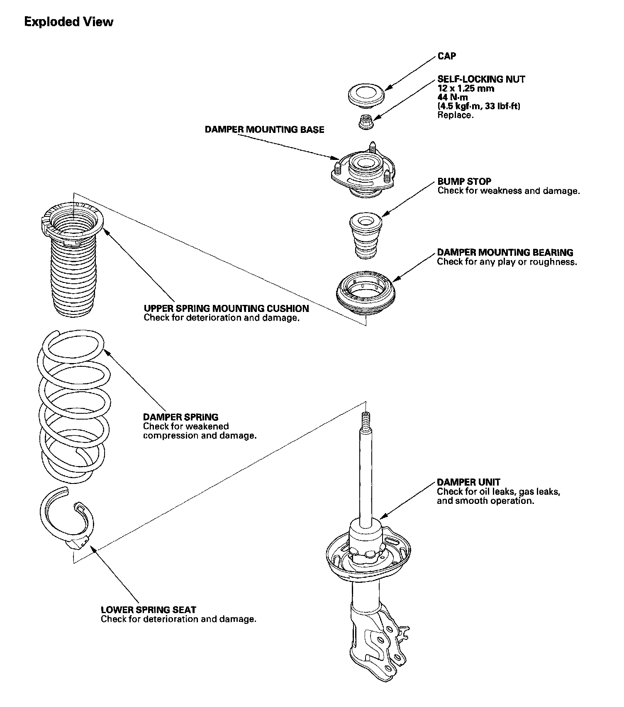
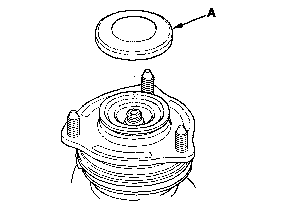
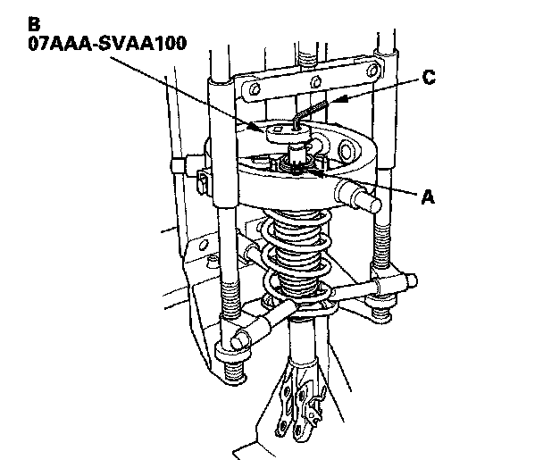
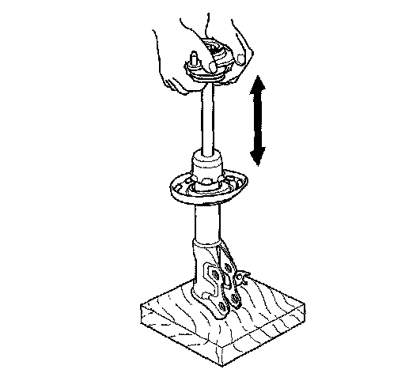
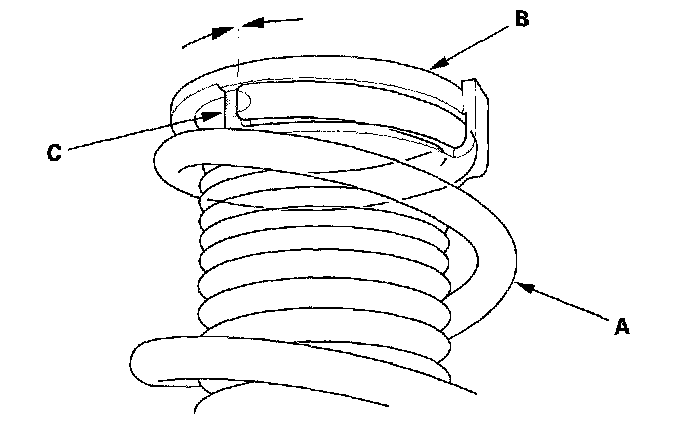
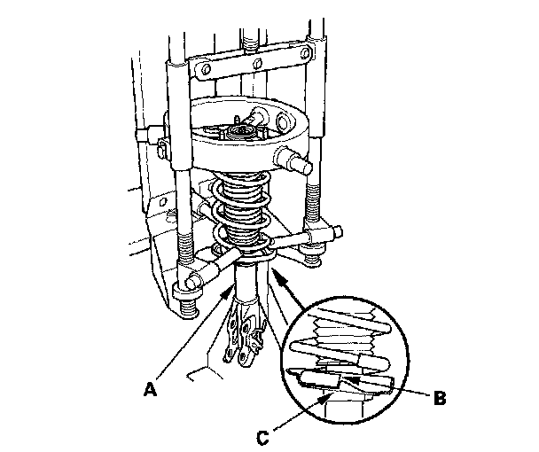
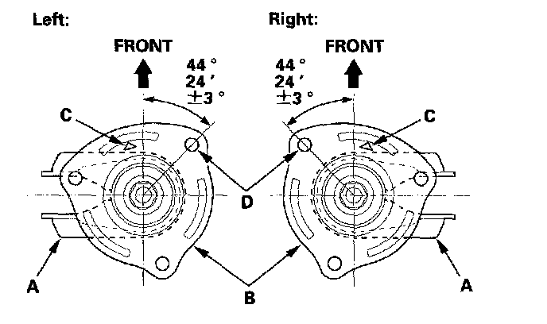
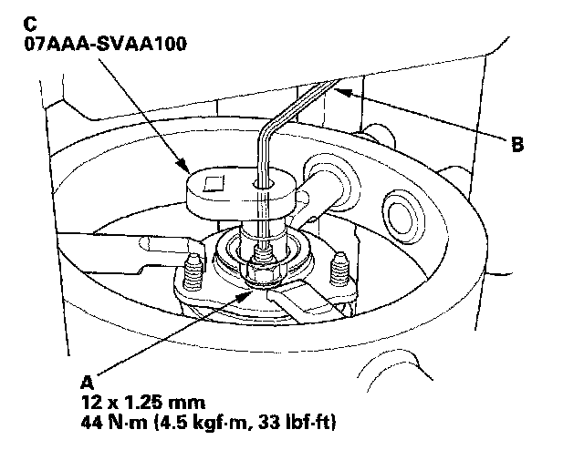

Damper/Spring Disassembly, Inspection, and Reassembly
Damper/Spring Disassembly, Inspection, and ReassemblyDamper/Spring:

Special Tools Required
Strut nut adapter 07AAA-SVAA100
NOTE: When compressing the damper spring, use a commercially available strut spring compressor (Branick MST-580A or Model 7200, or equivalent) according to the manufacturer's instructions.
Disassembly

1. Remove the cap (A) from the top of the damper.
2. Compress the damper spring, then remove the self locking nut (A) using the strut nut adapter (B) while holding the damper shaft with a hex wrench (C). Do not compress the spring more than necessary to remove the nut.

3. Release the pressure from the strut spring compressor, then disassemble the damper as shown in the Exploded View.
Inspection
1. Reassemble all the parts, except for the upper spring mounting cushion, the bump stop, and the damper spring.
2. Compress the damper assembly by hand, and check for smooth operation through a full stroke, both compression and extension. The damper should extend smoothly and constantly when compression is released. If it does not, the gas is leaking and the damper should be replaced.

3. Check for oil leaks, abnormal noises, or binding during these tests.
Reassembly
1. Install the damper spring (A) on the upper spring mounting cushion (B) by aligning the ledge portion (C)

2. Compress the damper spring.
3. Install all the parts except the damper mounting washer and self-locking nut onto the damper unit (A) by referring to the Exploded View.

4. Align the bottom of the spring (B) and the stepped part of the lower spring seat (C).
5. Align the damper bracket (A) and the damper mounting base (B) so that the "A" stamp (C) points toward the front.

6. Align the angle of the strut bolt (D) on the damper bracket as shown.
7. Install a new self-locking nut (A).

8. Hold the damper shaft using a hex wrench (B), and tighten the new self-locking nut using the strut nut adapter (C) to the specified torque value.
9. Install the cap.